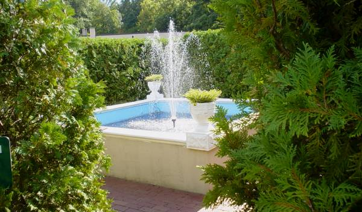
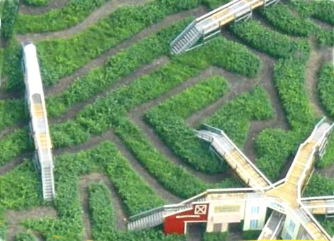
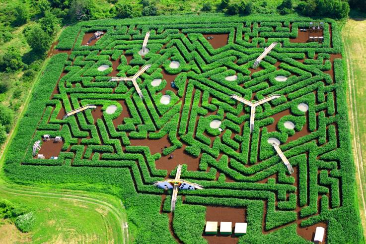
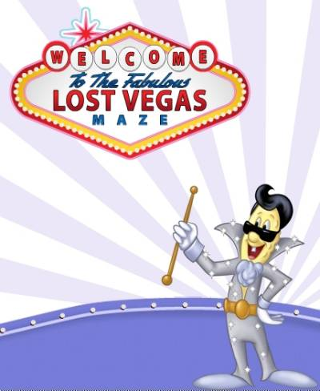
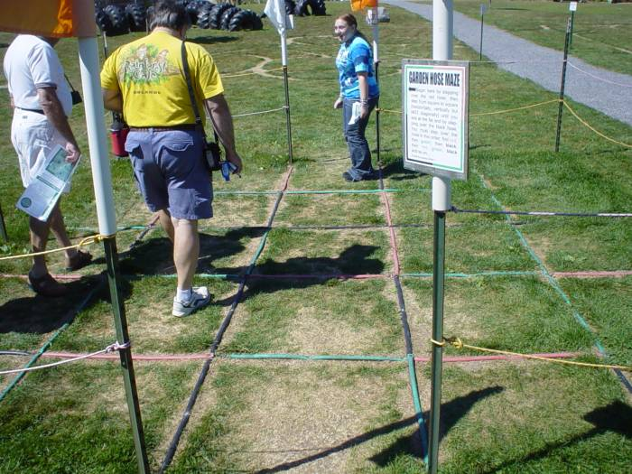
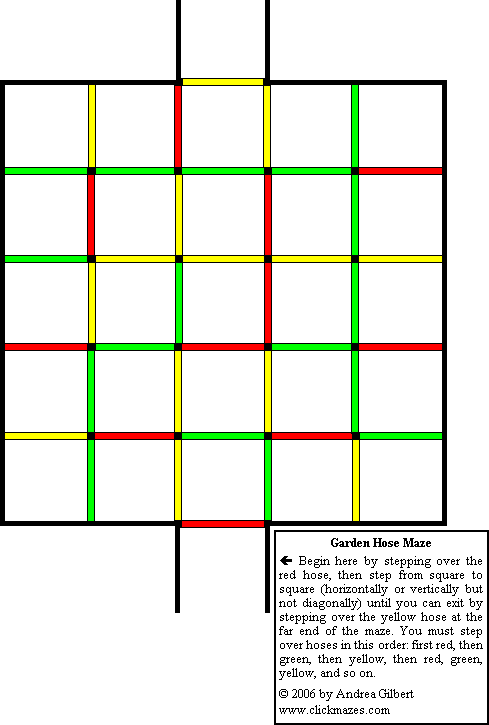
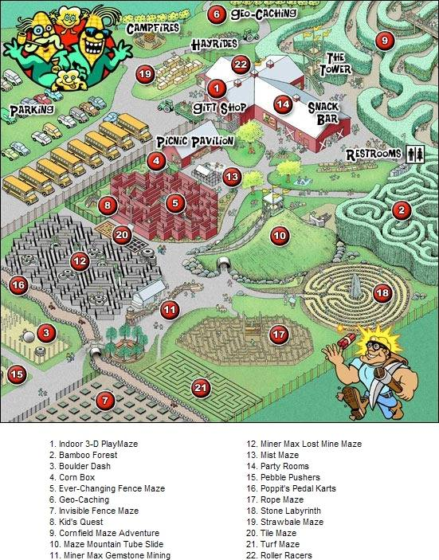
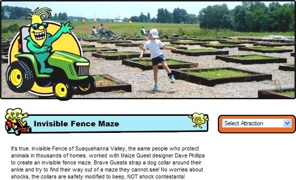

Posted on December 11, 2007
To a printable version
|
Bad Review No. 1:Our first stop was Staunton, Virginia, to visit our friends Susan and Kieran. One day we all drove up to Front Royal, Virginia, to visit a mirror maze that Skyline Caverns had constructed in a building outside their cave. As a kid in the 1940s, I used to enjoy the mirror mazes that were found in most amusement parks. I haven’t been in any since then. Adrian Fisher has been telling me that mirror mazes have greatly improved since the 40s, with better mirrors and with interesting scenes behind some of the glass. Adrian builds these mazes, and in March of 2007 he built a large mirror maze at the National Sea Life Centre in Birmingham, England. There were various sea creatures swimming through parts of the maze.
|
|
Adrian recommended the maze at Skyline Caverns, and, because it was one of his, I thought it would be great. It wasn’t. Its main problem is it was way too small. When you are in a mirror maze you’re fooled into thinking you can see for long distances. This virtual space is many times larger than the actual space of the maze. But if the actual space is very small, then the virtual space will be correspondingly small. Another problem with the Skyline Caverns maze is that it has one display, showing a dragon and her egg, but it has no goal. I think the ideal mirror maze would have a goal you could see in the distance (that is, in the virtual distance), but when you go towards it, you bump into a clear glass. You must turn, and that causes you to lose sight of the goal. Instead of a goal, there is a short path to an exit, which is covered with a blanket to keep the light out. And even worse, some idiot has painted arrows on the floor to show the shortest route to the exit. I guess the management was afraid that someone might get lost (and no one told them that mazes are supposed to get you lost). Susan, Kieran, Ann, and I all agreed that the maze was boring, but we enjoyed one thing: there were only four of us in the maze, but it looked like there was twenty. There were one or more copies of each of us, and it was fun to figure out which was the real person and which was a copy. |
Good Review No. 1:I felt bad about subjecting everyone to that mirror maze, so on our drive back to Staunton, I suggested that we stop at a maze that I know is good: the Garden Maze next to the Luray Caverns. I had visited this maze before and wrote about it here. I was surprised that I enjoyed the maze even more this time than I had before. The layout for this maze remains unchanged (though they are thinking of adding a facility for making changes); so I knew the general outline of the solution. But that didn’t really help me. I spent about an hour finding my way to the goal. Also, my friends all enjoyed the maze and found it to be very challenging. |

|
This maze is a challenging puzzle, but it is also something else: it is a pleasant walk through a garden. These two features combine to make the maze a very enjoyable experience. I also like this maze for two things it does not have: It does not have a goofy theme (in the next review I get into goofy themes) and it is not built in a certain shape so it looks like some character or scene. Bad Review No. 2:The next stop on our trip was Summit, New Jersey, where we spent a week visiting Ann’s family. We then drove to Worcester, Massachusetts, to visit the Davis MegaMaze just north of that city. I have to apologize for giving this maze a bad review, because it has a lot of good features, and the manager, Larry Davis, is very serious about mazes. He hopes someday to build a maze park. What got me to drive all the way to Massachusetts is this picture from their web site:  I thought: Wow! Their mazes have lots of bridges, and they even have bridges over bridges. Their maze for 2007 has eight separate bridges. They should be able to interweave several intricate paths to create a complex, fascinating maze. After I went through the maze I thought: Wow! Am I disappointed. An aerial view is below. If you’d like to see a really huge aerial view, click here, wait until the picture finishes loading, then click on the picture. |

|
If you examine this aerial view, you’ll see that the maze is rather porous, that is, there are several small gaps in the hedges. They fill most of these gaps with yellow barricades. This gives them the ability to change the maze. (Actually, I never thought that changeability was a great feature for a maze. I mean, how many times are you going to come back to a maze?) It also gives them the ability to choose how difficult to make the maze. In this case they chose to make it too easy. I’m afraid that’s the choice most businesses will make if they have the ability. So, in the end, all the bridges added nothing. This is less a maze and more just an interesting playground. In the corners of the maze are various activities. One we found was a sling that shot tennis balls at various targets. Another had a rather long slide. The idea of the Davis maze is you wander around and play various activities, and then leave. You don’t really have to use your brain to solve the maze. Instead, finding the exit is rather trivial. I’m also afraid that other mazes are becoming like this. Ann and I did wander through the maze and found it to be pleasant enough. We did like the activities and we liked the bridges just because they were bridges. I remember seeing one bridge and thinking, “Now that looks interesting.” So I tried to find a path to the bridge, and that took longer than I thought. When I was on the bridge, I saw the slide and I thought, “Now I’d like to try that.” Then finding the slide involved more paths and took longer than I thought. Further notes about eight bridges: I now realize that I was rather dumb to think that a maze with eight bridges would be very complex. If you had a field the size of the Davis maze, and if you could build eight bridges, then you could design a maze so complex that only a few people could solve it, and it would take each of them ten hours or more. So, no one is going to build a maze like that. (But wouldn’t it be great if someone did!) Therefore, there is no logical need for eight bridges, and two or three should be enough for any maze. |
|
 |
Next, I wanted to say something about the goofy theme for this maze. You might as well discount everything I say here, because I seem to be the only one who doesn’t like themes, and every cornfield maze that is built has a theme. Don Frantz, of the American Maze company, told me that if one of his mazes did not look like a picture of something or other, he would not be able to get any publicity. The theme of the 2007 Davis MegaMaze is Lost Vegas (ha, ha). An aerial view of the maze shows two dice. It’s a little hard to see, but the pictures in all the cornfield mazes are hard to see. It’s also hard to see if you aren’t in an airplane. Before you enter the maze you are shown a short video about Las Vegas and the background music in the maze is mostly songs that have some relation to Las Vegas. Now suppose, just suppose, you are spending a week in Las Vegas. You decide to go to an attraction that allows you to experience virtual reality. You put on the helmet with the screen, and you choose the experience titled “Walking through a cornfield.” That sounds like a lot of fun, and I would certainly pay to do it. Maybe the experience includes a herd of pigs you have to escape, or maybe (now, here’s an idea) the experience is a cornfield maze and you have to find the goal. |
|
One final note about the Davis MegaMaze: Adrian Fisher designs all their mazes, and he also supplies small mazes-with-rules that are placed outside the cornfield maze. One of these is pretty interesting. It is a pile of overlapping boards. It looks like they were just dumped there and are awaiting a trash pickup. However, there is a small sign next to the pile explaining that you must travel from the board marked START to the board marked GOAL, and you must follow this rule: From START you travel UP to the next board, then you travel DOWN to the next, then UP, then DOWN, etc. This is a pretty complicated maze, and the solution involves visiting some of the boards more than once. The maze was designed by Ed Pegg, Jr. and he has rules and a diagram of it here. (Ed also adds a goofy theme to his rules. There is no stopping goofy themes!) Good Review No. 2:After spending a day at the Davis maze, I was pretty worn out and was ready to start driving back to Florida. But the next day was the start of the Labor Day weekend, and we figured the traffic going around New York City would be terrible. So instead, we decided to drive 300 miles west and visit the Long Acre Farms Maze, which is just east of Rochester, New York. Their maze is designed by the American Maze Company, and I still think they do the best work. (Full disclosure: I supply a catalog of walk-through logic mazes to the American Maze Company as well as to The MAiZE Company.) The Long Acre maze is fairly large, it has two bridges, and it is quite difficult to find the way to the goal. The American Maze Company has an interesting innovation: When you enter a maze you are given an outline of the maze. The outline is blank, but it divides the maze into twelve numbered squares. There are twelve stations hidden in the maze. If you find one of these stations, you can collect a small printed square that shows a map of the small section you are in. The printed square also has a number. There is a tape dispenser at the station, so you can Scotch tape the square onto the corresponding square on your map. Finding just one of these squares is a big help in orienting you within the maze. As you find more squares and paste them on your map, you develop a better understanding of the maze. Also, if you want an extra challenge, you can choose not to leave the maze even if you’ve discovered the route to the exit. Instead, you can stay in the maze until you’ve collected all the squares that make up the map of the maze. The Long Acre maze has the required goofy theme, but because you paste together a map of the maze, you can see what picture is imbedded in the maze. You don’t have to find an aerial view. Long Acre Farms also does a good job with the logic mazes outside their cornfield maze. Here is a picture of Andrea Gilbert’s Garden Hose Maze. In the distance you can see come curvy paths cut into the lawn. That is one of my Freeway Mazes. |

|
In my logic maze catalog I had a 4x4 Garden Hose Maze, which I recommended, and a 5x5 version that I said was much too difficult. I included it just in case anyone had a use for it. The maze shown here is that 5x5 version. I watched the maze for a while and noticed that no one solved it, but everyone seemed to be having a good time. I asked one of the owners, Doug Allen, why he used the 5x5 version. When I talked with him, he was busy at his other job, barbecuing the hot dogs. Doug said he likes hard mazes and he doesn’t really care if anyone solves them. I was a little shocked he’d say that, but I think he has the right idea. The mazes at his farm are very popular. The mazes at other establishments, where the owners are trying to make things easy for everyone, are not as popular. If you’d like to try the 5x5 Garden Hose Maze, here is the diagram. The colors differ from those in the picture. The maze really is difficult, so don’t say I didn’t warn you. |

|
For more about this type of maze, see this section of Andrea Gilbert’s site. The Extremely Bad Review:Ann and I spent the rest of the Labor Day Weekend sightseeing in the area around Long Acre farms. We took an interesting walk along the Erie Canal, where we saw two locks from an older version of the Erie. I also spent a lot of time on our laptop computer. Ann had bought this, set it up, and took it on our trip. I didn’t think we would really need it, but it turned out to be very useful. I was looking up other cornfield mazes, and I came across something I had missed before: The Maize Quest Fun Park. Here is picture from their web site that shows their attractions: |

|
A maze park is something I have always wanted, so this seemed to be very promising. And look at number 7 on their list, an Invisible Fence Maze!! Here is their description of it: |

|
What a fantastic idea! Also, they mention Dave Phillips and I’ve always liked his mazes. I have a few of the maze books he wrote for Dover publications. The maze park is in south-eastern Pennsylvania, so we decided to stop there on our way back to Florida. We arrived at the park on a Friday. There weren’t many customers and only two women were in attendance. I asked if I could get a hot dog, and they said no food was available. We told them we were going to skip the cornfield maze because we wanted to get right to the Invisible Fence Maze. “Oh, that’s not working today,” said the older woman. “Does it ever work?” I asked. The younger woman smiled and said, “Well, somedays it works. The wires on the dog collars are thin and they keep falling off.” So I thought, “Crap! If it doesn’t work, shouldn’t you say something about it on your web site?” But I was polite and said nothing. We spent the rest of the day looking at the other attractions, most of which were either very bad or just plain non-existent. Number 5, the Ever-Changing Fence Maze, is a rickety wooden fence maze that has a format used in the worst of the old fence mazes. The object is not to escape the maze, instead you just wander around and find numerous “goals,” which are various plates on the walls. You are given a piece of paper and a crayon and are instructed to make tracings of these plates. Number 2, the Bamboo Forest, is a small, uninteresting maze created with Bamboo trees. It was also full of cob webs. There are other mazes in this park that are made of various other materials. But they are all uninteresting, because they are small, conventional mazes. However, they had two mazes-with-rules that I liked. They are both tile mazes, and they did a very good job in laying the tiles. One of the mazes is a no-left-turn maze where the object is to get to the center. No designer is credited here. The other is a brilliant dot maze by Dave Phillips. Anyway, my overall recommendation is: stay away from this place. However And In Conclusion:These reviews are the most I’ve ever written about what makes mazes good or bad, so I thought I should summarize my thoughts here. A maze is a puzzle, but being inside a maze is a much more intense experience than solving a puzzle in a book. When you’re in a maze, you are inside the puzzle and enveloped by the puzzle. To solve this puzzle and escape the maze, you need to exercise your sense of direction and develop a mental map (or at least a vague mental map) of the maze. A good maze should take you about an hour to solve. Now, my description in the previous paragraph makes a maze sound like an intellectual experience. Surely only professors of logic or mathematics would enjoy such a thing. But, surprisingly, mazes turn out to be, quite literally, “fun for the whole family.” Kids, especially, love mazes. And kids are good at solving them. So, mazes have two contrasting aspects: the intellectual problem-solving aspect and the silly-fun just-running-around aspect. People who build mazes to be money-making attractions sometimes have problems with the problem-solving aspect. They figure that if they reduce the difficulty level of the maze, then more people can visit it. But when they do that, it usually backfires and they end up with no one wanting to visit their maze. I can illustrate that point with a brief history of wooden fence mazes: Fence mazes were invented in 1973 by Stuart Landsborough for his Puzzling World attraction in Wanaka, New Zealand. They subsequently became a huge fad in Japan and then started to appear in America. In the first fence mazes in America, you entered at one side and then tried to find the exit on the opposite side. Unfortunately, a maze like this can be solved with the right-hand rule (put your right hand on a wall and follow it around). The next mazes put a goal somewhere in the maze. You had to find the goal, get a card stamped, then find your way outside the maze. If the goal is within an island of walls that do not connect with the rest of the maze, then you have defeated the right-hand rule. The next innovation was bridges. Bridges can defeat the right-hand rule and they also provide interesting views within the maze. Fence mazes were beginning to catch on here when someone came up with another innovation: Instead of just one goal in the center of the maze, why not have five goals—or more. Everyone thought this was a great idea. After all, if one of something is good then five should be better. From that point on, all new mazes had multiple goals, and the goals were usually in towers along the side walls of the maze. Well, as you might expect, five goals was not better than one goal. In fact, five goals was a terrible idea. When you went through one of these mazes, you did not focus on the central puzzle of finding your way out. Instead, you walked around at random and you came across a goal about every few minutes. It was easy to find the five goals, and finding the way out was a trivial puzzle because most of the maze paths were devoted to reaching the five goals. I talked to the owner of one of these five-goal mazes and he said, “People today have short attention spans, so they need rewards every few minutes. No one will want to spend an hour trying to solve one puzzle.” As another way to attract more people to their mazes, they removed many of the barriers to make the mazes easier. Now everyone should be able to solve them. But what happened is people found these mazes to be so dumb that they quit going to them. Almost all the mazes went out of business. So, H.L. Mencken was wrong: it really is possible to go broke underestimating the intelligence of the American public. One of the few fence mazes to survive was one of the good early ones, Maze Mania in South Carolina. I wrote about it back in 1998. Don Frantz invented cornfield mazes in 1993. He contracted with Adrian Fisher to design and help build his first maze. From the beginning these mazes had bridges to avoid being solved by the right-hand rule. Cornfield mazes have become a true fad. Most of them have multiple goals, where you search for various items within the maze. But these multiple goals have remained incidental and they do not conflict with the central puzzle of finding your way out. However, there remains the problem of how difficult it should be to find your way out. Excessive dumbing down is what killed fence mazes. The same thing could kill cornfield mazes. I don’t know what will happen. Right now there are some mazes that are much too dumb, but there are other mazes that remain hard to solve. To correspondence about this article. |
{kind=link}